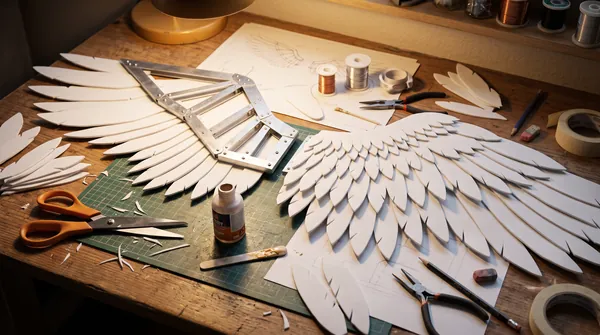
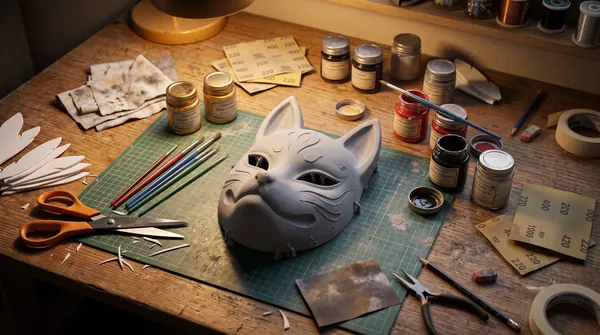
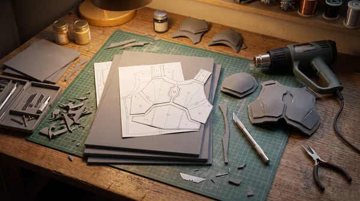
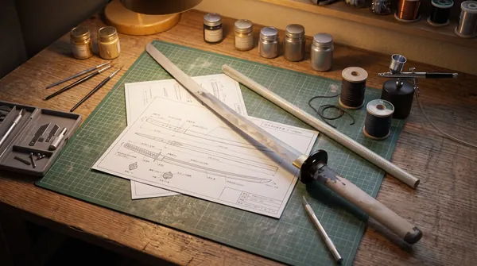

Блог

Как сделать крылья для косплея
Как сделать крылья для косплея: каркас, материалы для перьев, крепление к спине и советы по перевозке.

Как сделать маску для косплея
Из чего делают маски для косплея, чем отличаются EVA-пена, картон и 3D-печать, и как сделать маску удобной.

Как сделать доспехи для косплея
Какую плотность EVA выбрать для доспехов, как построить выкройки и чем покрасить броню для косплея.

Как сделать катану из аниме
Как сделать катану из аниме: чертёж клинка, сердечник, цуба и оплётка рукояти, покраска под металл.